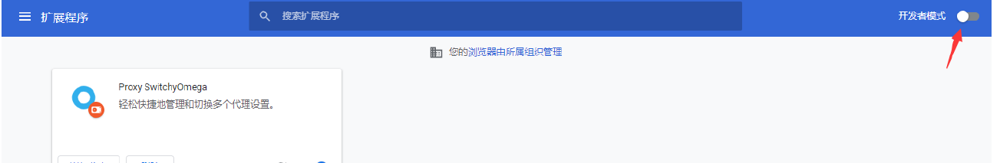
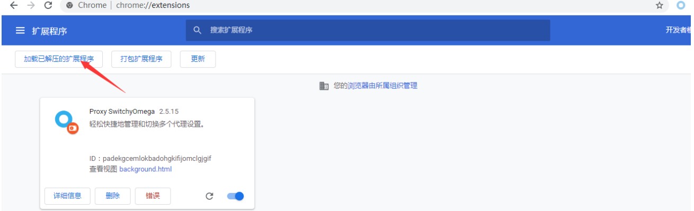
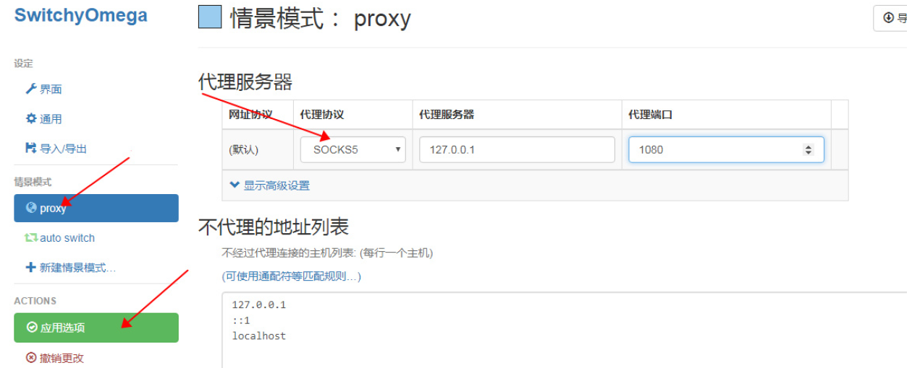
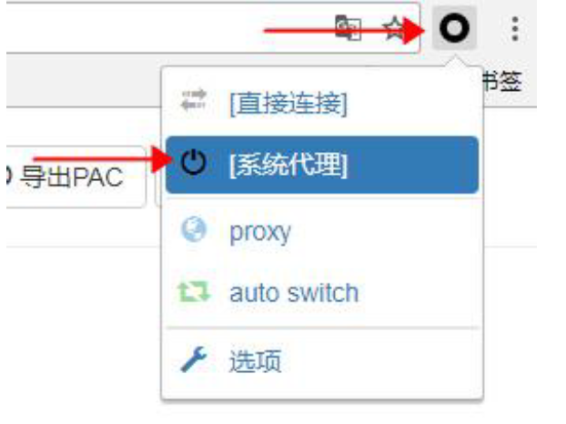

一、检查下手机或者电脑的时间，必须和北京标准时间一致，不能有快慢
二、请确认是否被杀毒软件阻止，如果有杀毒软件弹框，全部允许
三、如果尝试以上办法都不可行的话，请按如下教程使用chrome浏览器并且安装插件解决：
chrome switchyomega插件已在软件的Qv2rayplugins目录下
如果你没有chrome浏览器，可点此下载安装：https://jiyundoc.oss-cn-hongkong.aliyuncs.com/ChromeSetup.exe
设置步骤如下：
安装插件：
1、解压下载后的插件
2、在 Chrome 地址栏输入 chrome://extensions 输入完毕后按回车
3、点下图示的开关启用开发者模式
4、点击’加载已解压的扩展程序’
5、选择Qv2raypluginsSwitchyOmega-2.5.15即可完成安装，请注意，只需要选择SwitchyOmega-2.5.15这个目录即可，不需要再点到里面
设置插件
1、点击插件设置页面左边的proxy，然后在右边代理服务器中代理协议设置为socks5，代理服务器填写127.0.0.1,端口1080，设置完毕后点击页面左边的应用选项
2、设置完毕后，一般情况请勾选浏览器右上角的圈圈，点击系统代理，如果遇到不能访问的网站，再勾选浏览器右上角的圈圈，勾选proxy，设置完毕后即可正常上网
